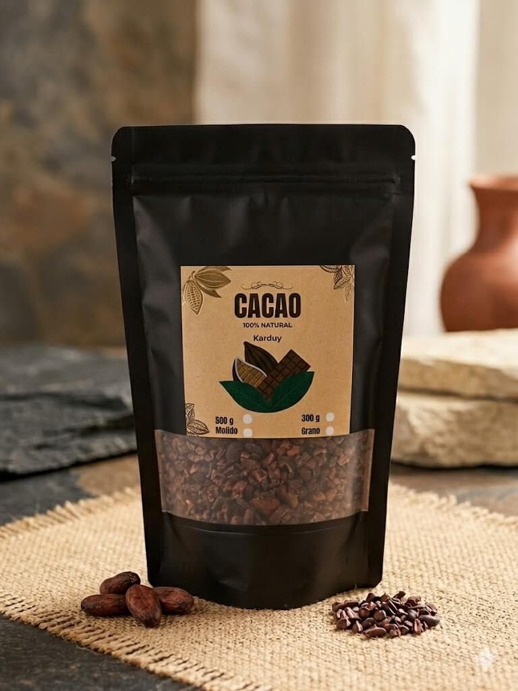
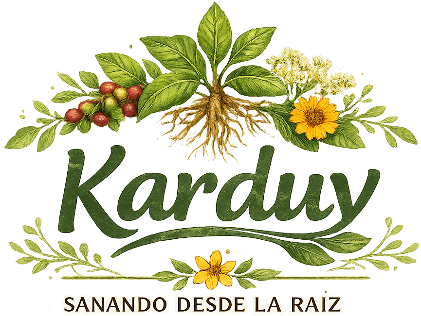
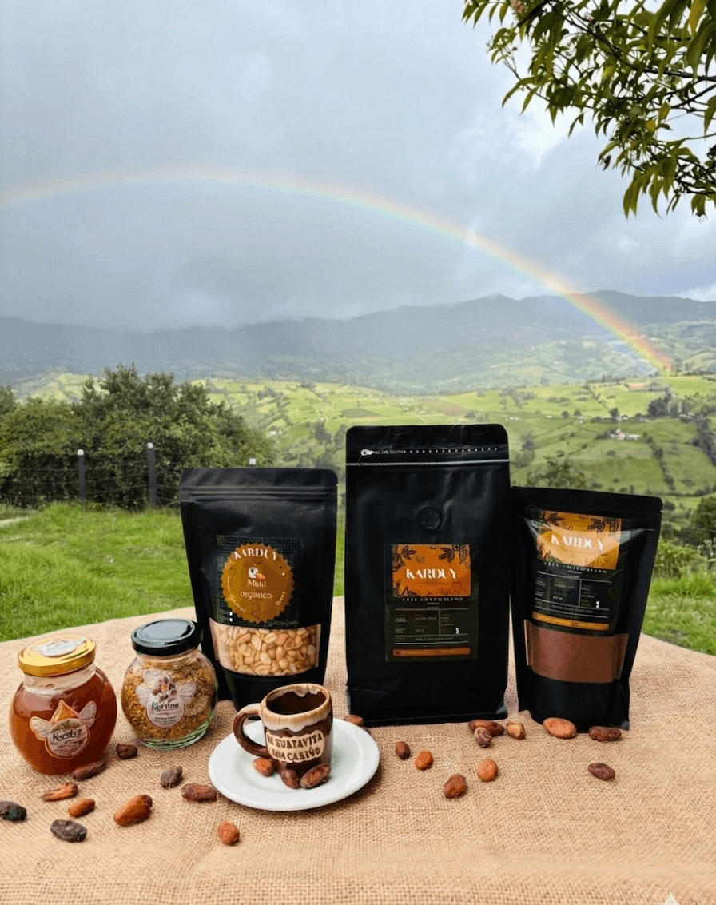
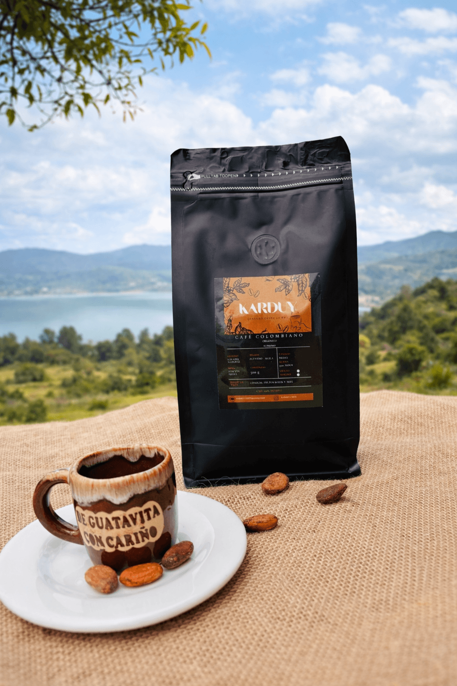
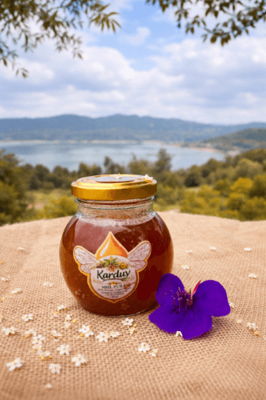
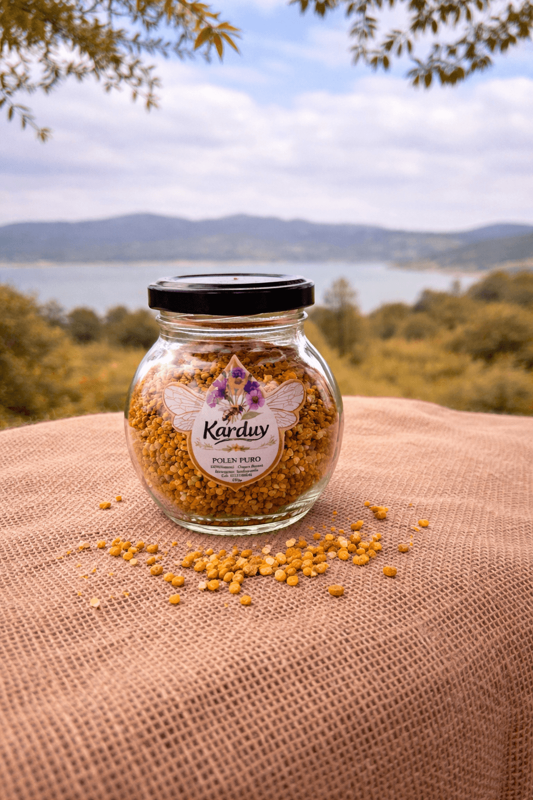
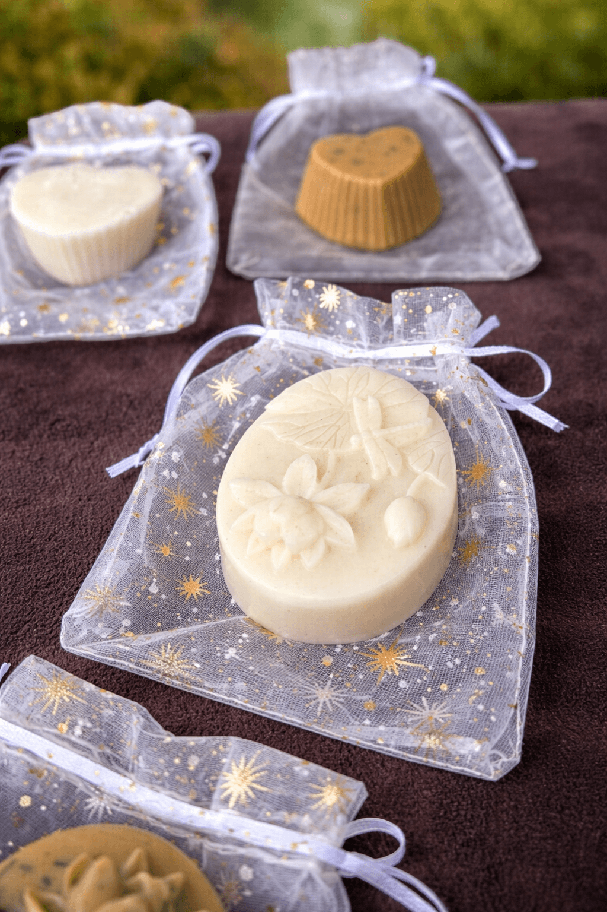
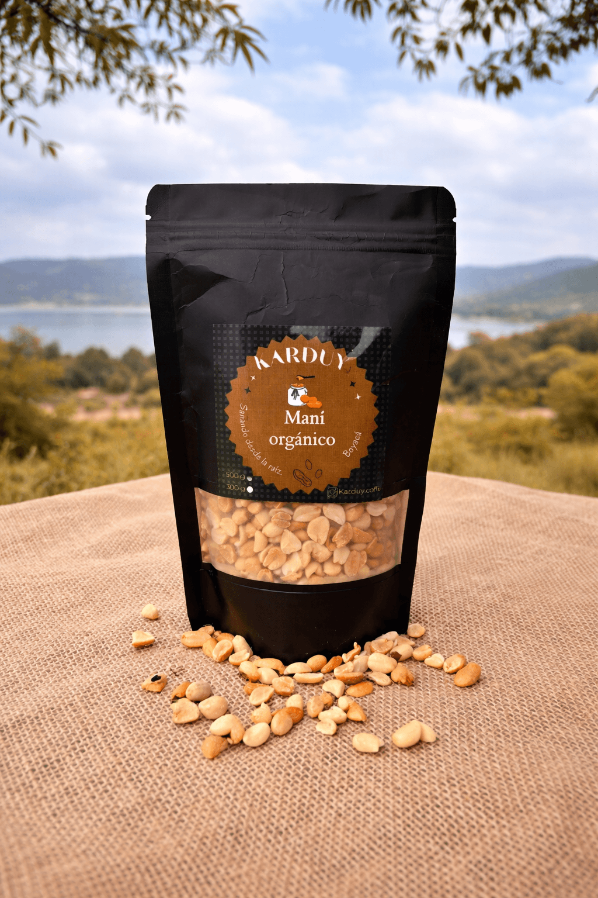
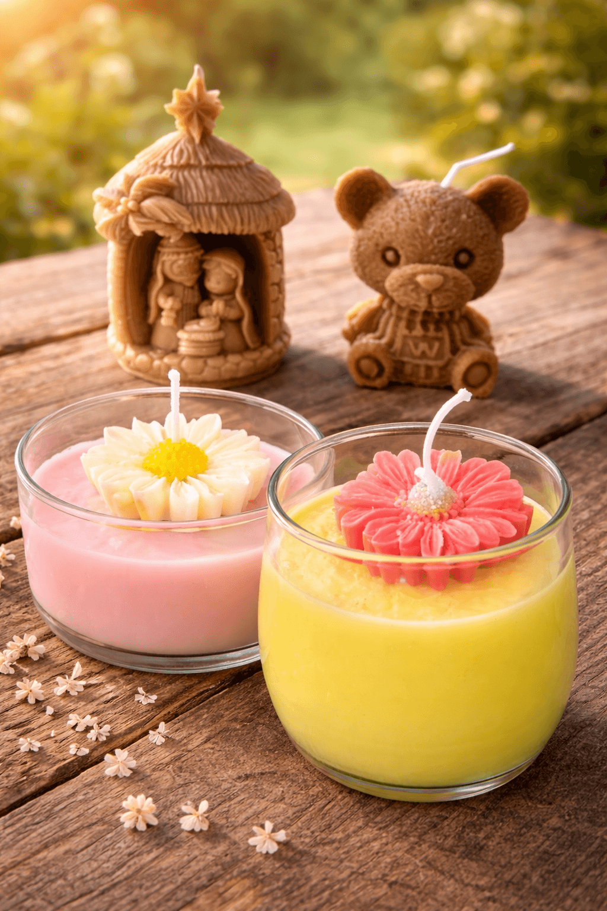

Cacao
Cacao Artesanal
El corazón de nuestra historia familiar.

Productos naturales y artesanales
Karduy nace en la finca de nuestros abuelos en San Pablo de Borbur, Boyacá, donde cultivamos con respeto nuestro producto insignia: el Cacao.
Hoy, desde Guatavita, honramos esa herencia familiar ofreciendo lo mejor de nuestra tierra: café de Acevedo, miel, polen y una línea artesanal pensado en tu bienestar. Somos tradición que sana, transformando raíces en un propósito de bienestar natural para tu mesa.


El corazón de nuestra historia familiar.

Aroma y tradición en cada taza.

Dulzura pura de las montañas.

Multivitamínico natural para tu bienestar.

Cuidado consciente para tu piel.

Energía pura y crocante.

Luz y aromas naturales para tu hogar.

Disfruta productos naturales y de alta calidad:
Perfectos para acompañar tus momentos, cuidar tu cuerpo y consentir tu paladar 🌱
📩 Escríbenos para precios y pedidos